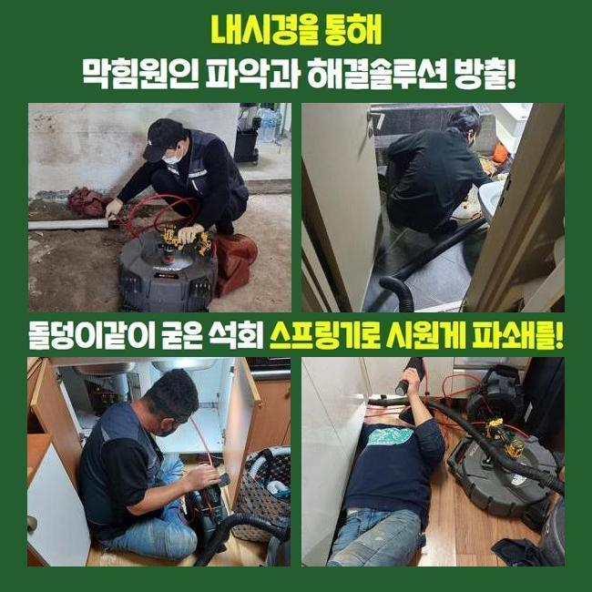
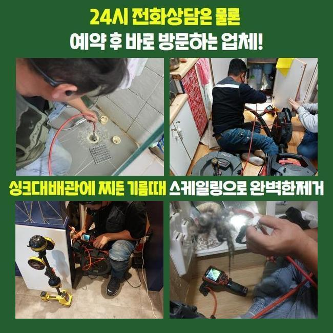
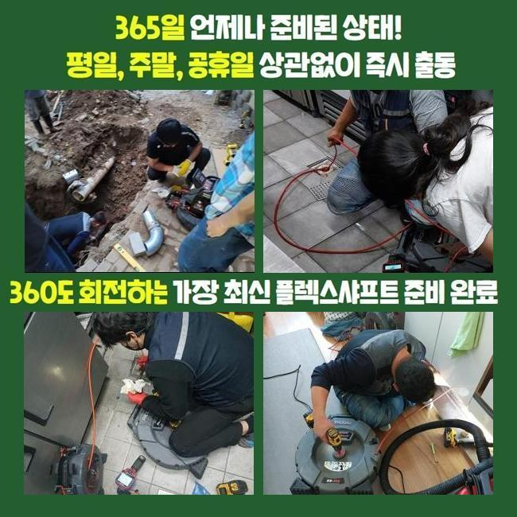
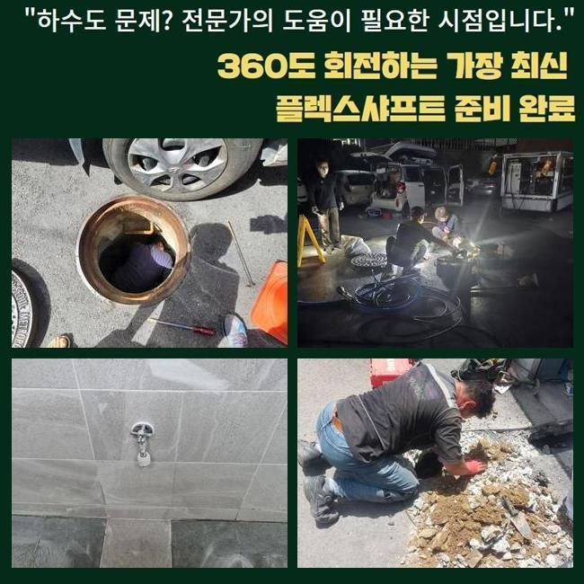
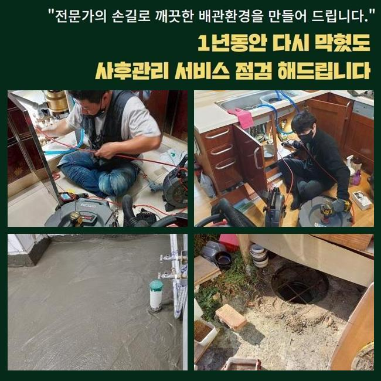
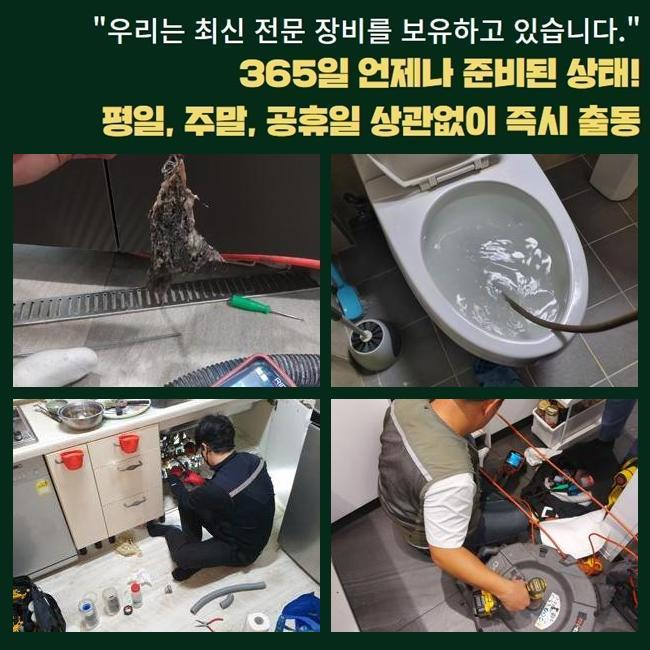
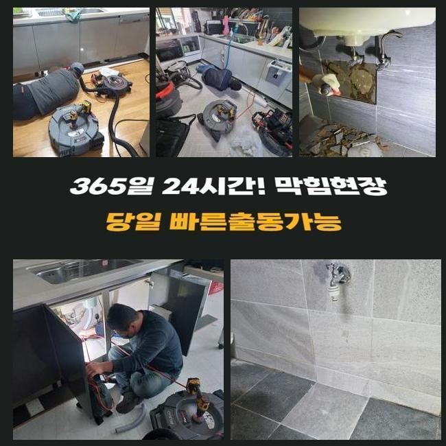

🏠 양주 어둔동화장실뚫음 광적면 배관뚫기 설비하는곳
양주 어둔동 배관막힘 전문 시공 후기

📋 작업 개요
- 위치: 양주 어둔동, 어둔동, 양주
- 서비스 유형: 배관막힘, 집수정막힘, 누수수리, 역류해결, 뚫는업체, 배관청소, 고압세척
- 작업 일시: 2025. 6. 5. 18:16
- 업체명: 하수구수사대 (010-5615-2118)
🔍 문제 상황
양주 어둔동화장실뚫음 광적면 배관뚫기 설비하는곳
며칠전 구축빌라 욕실공간의 배수관 역류사태로 저층 세대원들이 일상이 어려운 상황이라며 전화를 하셨답니다
이에 즉각적으로 방문하여 내부상황을 검사하고 검점해 드렸습니다
간단하게 정리한다면 또다시 배관막힘이 생겨날 것으로 추정되었어요
그러하기에 확실한 처리 방법을 준비해야 했죠
이를 위해 배수설비와 결부된 대략적인 구조를 조사하여야 됩니다
그러므로 역류발생이 일어난 화장실을 조사하는걸 포함하여 정화설비도 점검하여야 합니다
집수시설은 다양한 이물들도 가득하였고 오취도 퍼져나가고 있었어요
많은 인원이 머물고 있기에 배수시설물은 수시로 세척해주는게 좋아요
그러나 일상적으로 정기적 점검이 이행되지 않았기 때문에 계속적으로 잔존물이 누증되는 상태였고 표면적으로도 그것들이 감지되었습니다
해당 결과치를 의뢰인께 이야기드렸고 시공은 다음날 될수있다고 말씀주셨어요
이튿날 오전 9시에 저희들은 시공장비를 갖춘채 다시 방문드렸어요

🔎 원인 분석
💡 전문가 진단: 정밀 진단 장비를 사용하여 슬러지의 고착 여부를 판명하고 타격/세척 작업을 실시했습니다.
해당 작업은 조사와 본작업으로 구성되는데 이것들이 방문한 날 연이어서 시행될때가 많으나 어쩔때는 이틀정도의 시간에 감행되기도 해요
손님께서 수리하기 전에 주변을 깔끔하게 치워주셨기에 한층더 빨리 공정이 이행되었어요
재점검 결과 유분으로 가득한 이물질들과 여러 노폐물로 정화조가 오염된 상태였습니다
정화조를 정비하는 업무가 힘든건 이런식으로 뒤엉킨 오염물질을 거름망으로 하나하나 끄집어낸뒤 고압물세척을 시행해야 하기 때문이에요
집수시설이 비좁은 형태로 형성되어 수차례 거름망으로 치워내는 공정을 이행하는게 신체적으로 힘겨움을 누증시키죠
하지만 이것이 이행되지 않는다면 해결이 난망하므로 다소 까다롭더라도 감행해나가야 해요
많은 찌꺼기들이 잔류한 상태여서 고린내가 진동하는 형국이었고 비좁은 탱크 주변에서 시공해야 했기에 시공업자들이 싫어하는 과정이기도 해요
끈끈하게 접착된 찌꺼기의 상태가 어마어마했습니다
자주 청소를 하면 이정도로 심각한 물질들은 발생을 안하는데 장시간 소제를 안하였으므로 꽤나 많은 찌꺼기를 없애야 했어요
저흰 전날 정화조 안을 사전에 파악해두었기에 포대자루를 충분하게 가지고 갔죠
포대가 계속 누적되었고 점진적으로 마무리가 되어갔죠
정비가 제대로 이루어지지 못하면 차후업무가 늘어질수 있기에 더더욱 심혈을 기울여 세척을 해나가고 있어요
뜰채로 건져올리는 청소를 1시간가량 진행했고 내시경으로 관속을 점검합니다

🔧 작업 과정
내시경장비는 바깥에 나타난 이물은 물론이고 배수관 하부의 모습도 분명하게 관측하도록 조력합니다
그러면서 관로의 균열또한 알아내기도 한다는 사실을 말씀드려요
1~2층에서 화장실배관의 역류증세도 있던터라 관로안을 꼼꼼하게 들여다본 뒤 막힘을 촉발한 포인트를 정밀하게 간파하고 고수압세척 과정을 밟아야 돼요
내시경카메라로 조사하니 예상대로 침전물이 배관측면에 누증되어 길목이 좁게 되었답니다
하부쪽으로 이동할수록 체증이 심각하여 1층에 역류가 생기는 일까지 나타나게 된것입니다
누적된 석회물질들과 퇴적물을 처치하는덴 고압 온수세정보다 나은건 없어요
상식선에서도 기름기와 잔재들을 깔끔히 정비하려면 저온보다는 높은온도가 확실히 좋을겁니다
그러므로 막힘이 생겼다면 온수작업이 이루어지는 업체로 문의하는 게 낫습니다
구조물 쪽으로 이동해 호스줄을 파이프 심층부에 깊게 넣어두었으며 10회 이상 고수압 청소작업을 수행하였죠
의뢰자께서 하수관 고장을 정리하려 다양한 약품을 적용하는 경우도 있는데 그럴때에 도리어 배관안의 크랙이 나타나기도 해요
급격하게 생긴 반응으로 인해서 배수관이 녹아버리는 사태도 발발할수 있어요
저희팀은 그러한 측면들을 충분히 고려해서 뚫음과 관련한 공정을 이행합니다
하수관에 이상현상을 야기하지 않은채로 배관벽에 겹겹이 쌓인 노폐물들을 처치할수 있을만한 시공이라고 안내해 드립니다
관벽에 고착화된 석회찌꺼기와 여러종류의 노폐물이 소멸되면서 관이 청결해졌습니다
이물들이 토출되는걸 확인하니 상황의 시급성을 분명히 파악할수 있었죠
10회 이상 고수압 정비를 하며 파이프를 전체적으로 소제하니 길목이 넓어지더라고요
집수정 안에서 풍기던 오취도 모두 소멸되었죠
물청소를 시행한뒤 배관내시경을 활용하여 배수관 내측을 검사하였답니다
이물제거가 확실히 되었으며 작업장 주변도 청결하게 정비해드렸답니다
만일에 노폐물이 배관과 일체화되어 고압물세척으로 처치가 곤란했다면 샤프트 장비를 이용했겠지만 이번엔 없어도 무방하였죠


✅ 작업 완료
따라서 예측했던 것보다 신속하게 시공이 종료되었답니다
의뢰인께는 살아가시면서 고장이 터졌을때 어떠한 방안을 갖고 행동해야 되는지 명확하게 안내해 드렸죠
가정안에서 물막힘이 생긴다면 여러가지 방법들을 통해서 수리해보려 하시는데요
그 상황중에 같은라인 주민의 물샘피해로 이어지기도 합니다
그렇기에 역류가 일어났다면 될수있으면 빨리 전문수리팀에 문의하여 검사를 요청하시는게 먼저에요
전화주시면 신속히 이동하여 배관문제를 해결해 드릴게요




⚠️ 베란다 누수 및 방수 관리 방법
- ✅ 비가 많이 올 때 창틀 주변이나 아래층 천장에 얼룩이 생기는지 정기적으로 확인해 보세요.
- ✅ 우수관 주변 실리콘 마감이 들뜨거나 깨진 틈새가 있는지 손상 여부를 수시로 체크하세요.
- ✅ 베란다 바닥 타일의 줄눈(메지)이 소실되면 그 틈으로 물이 침투하여 누수가 유발됩니다.
- ✅ 누수 의심 증상 발견 시 방치하면 아래층 손실이 커지므로 즉시 전문가의 진단을 받으십시오.
💡 핵심 정리
- 확실한 장비 작업(내시경 점검 및 샤프트 스케일링)으로 원인을 뿌리 뽑습니다.
- 작업 후 1년 이내에 동일한 부위 재발 시 100% 무상 A/S 서비스를 보장합니다.
- 서울 · 경기 · 인천 전 지역에 24시간 언제든 긴급 출동할 수 있도록 항시 대기 중입니다.
❓ 자주 묻는 질문 (FAQ)
🚨 양주 어둔동 배관막힘 문제로 고민이신가요?
정확한 원인 진단과 확실한 시공으로 재발 없는 해결을 약속드립니다.
24시간 긴급 출동 | 서울 · 경기 · 인천 전지역 | 1년 내 재발 시 무상 A/S